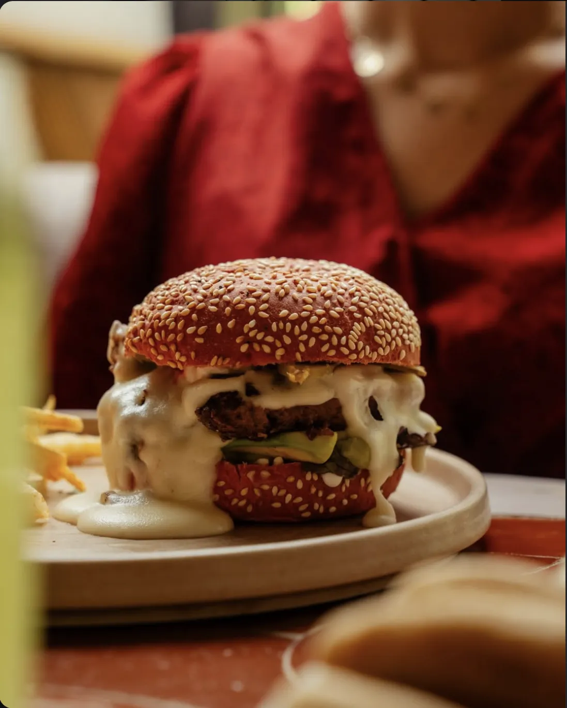
- Nº 03
- Burger healthy
- Pain à la betterave, steak de bœuf, guacamole, fromage fondu, pousses de salade, pickles.
- 135 DH
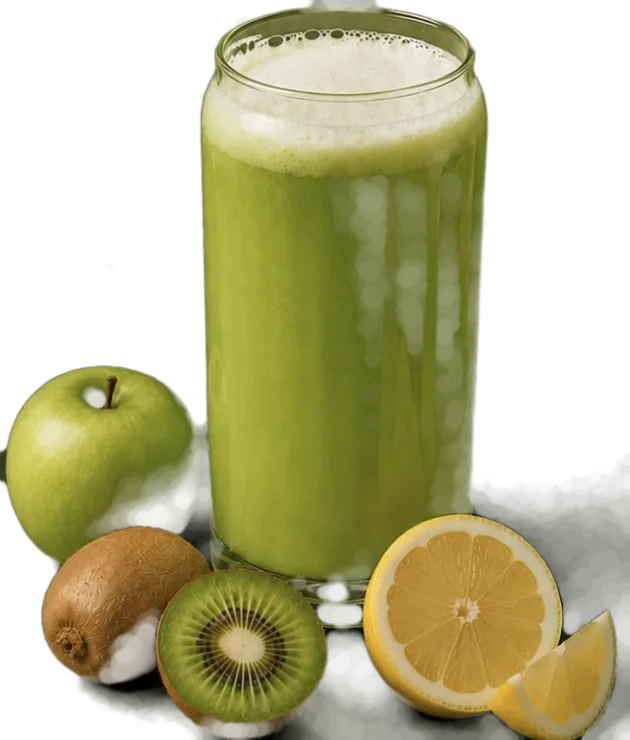
Healthy food à Marrakech. Brunch, déjeuner, tea time et dîner, à M Avenue.
Rattan, zellige et lumière douce. On passe pour un café, on reste pour le brunch.
Petit déjeuner
Du lundi au vendredi, de 8h30 à 11h00.
Le week-end, de 8h30 à 14h00.
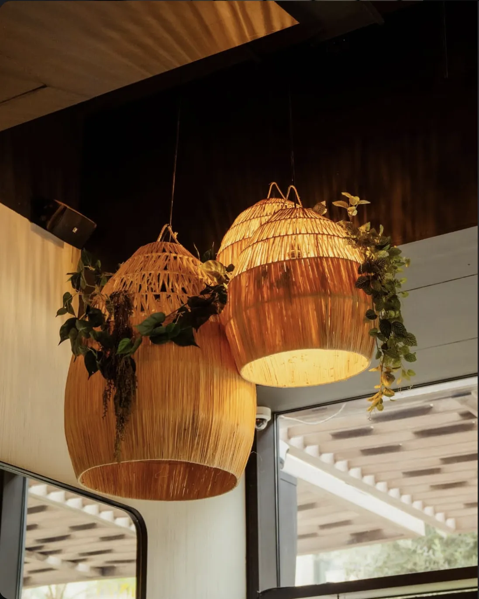
Nº 02
Du croquant, du fondant, une touche sucrée-salée. Scrollez, il se dévoile.
Tout est fait maison. Quelques classiques, avec leur prix.

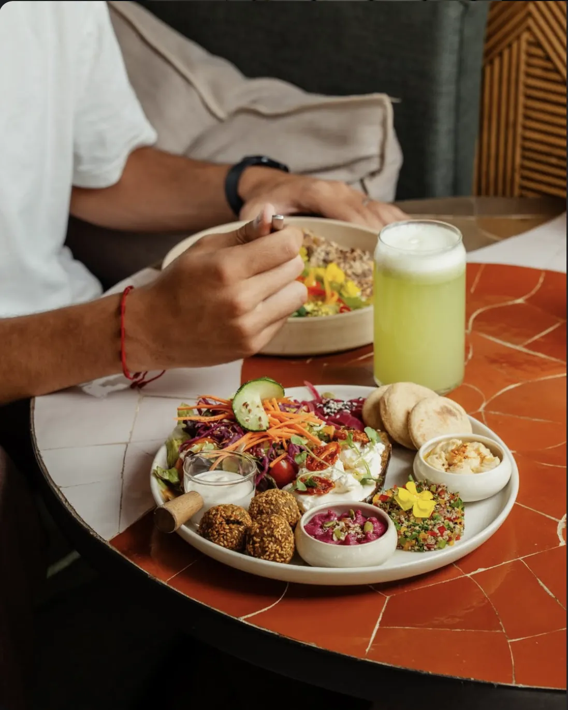
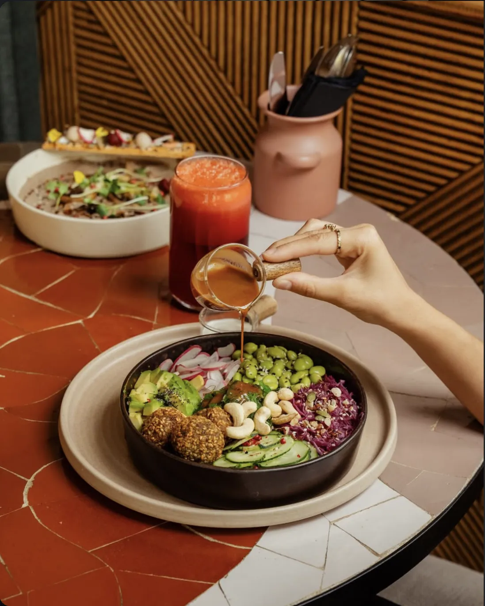
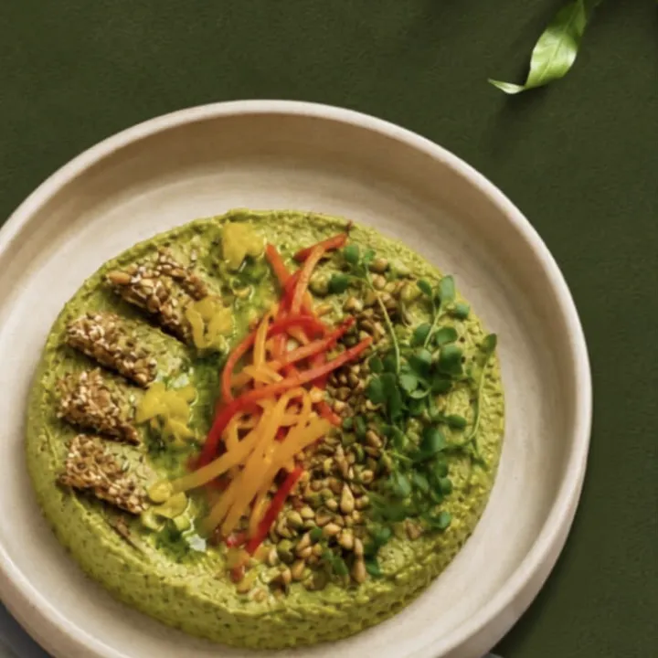
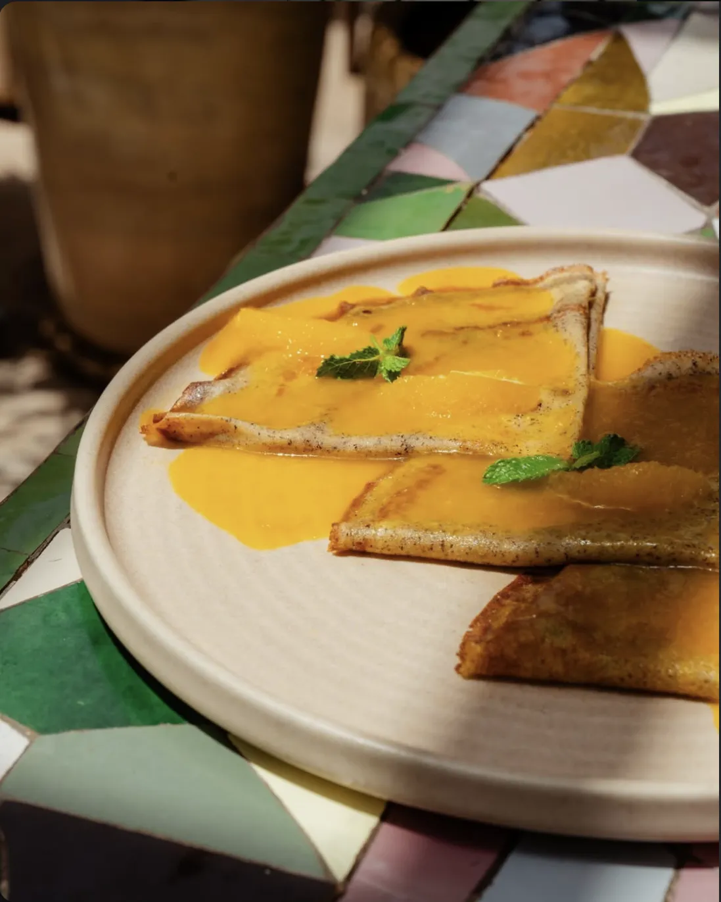
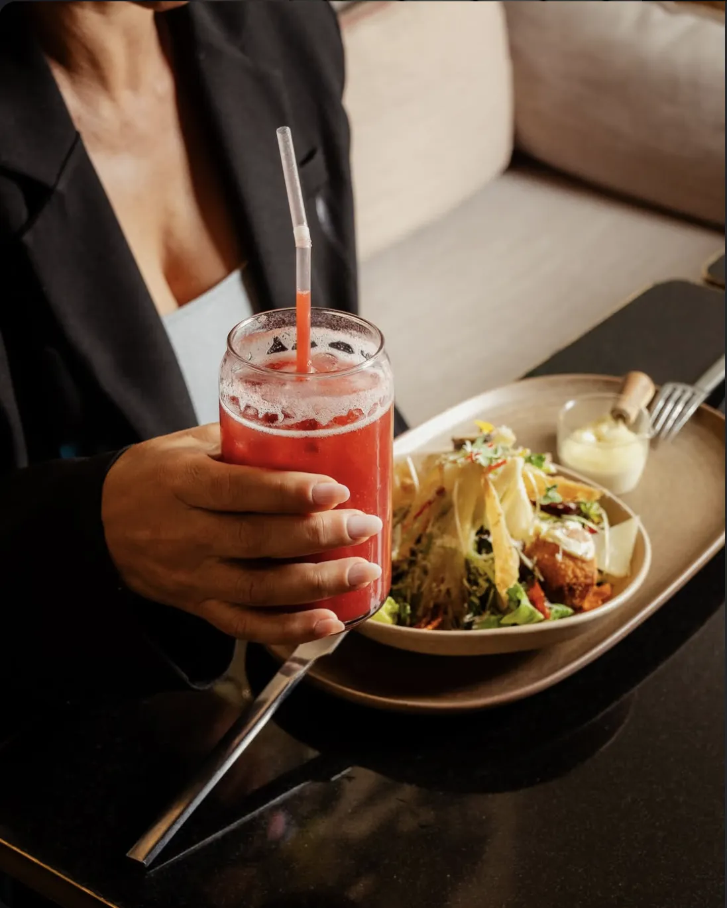
Et aussi : bagel breakfast, Nativ'Açaï bowl, dim sum gambas, salmon aux agrumes, cookies au sarrasin sans gluten.
Venir goûter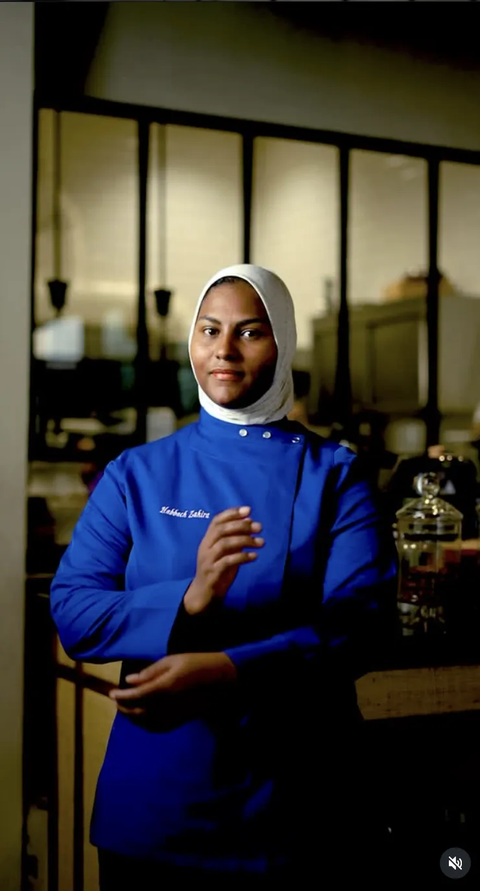
De l'accueil au service, chaque détail est pensé pour que vous profitiez pleinement du moment. Parce que bien manger, c'est aussi se sentir bien accueilli.
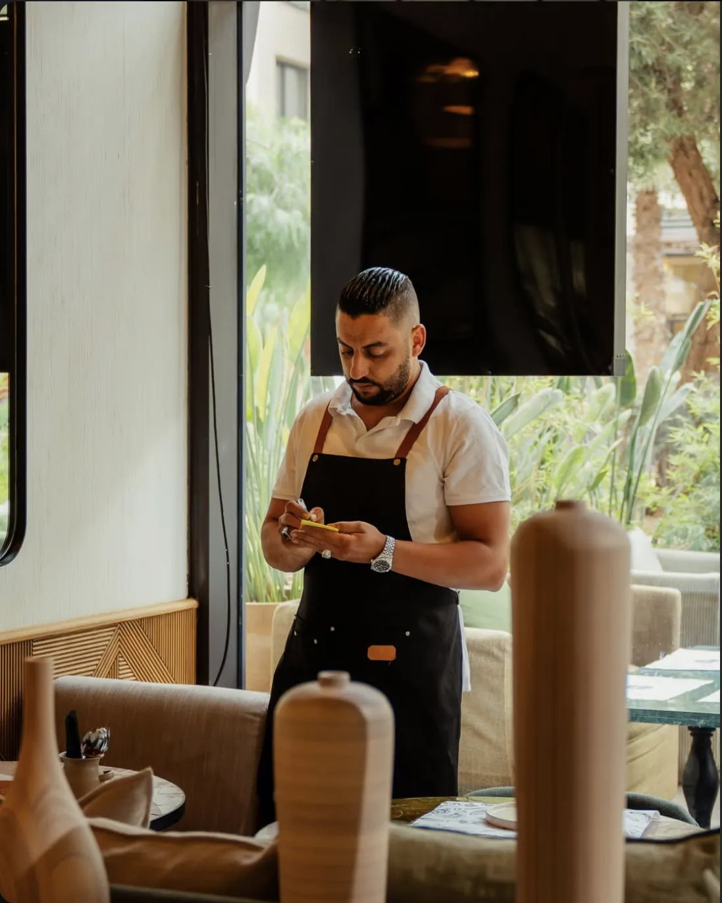
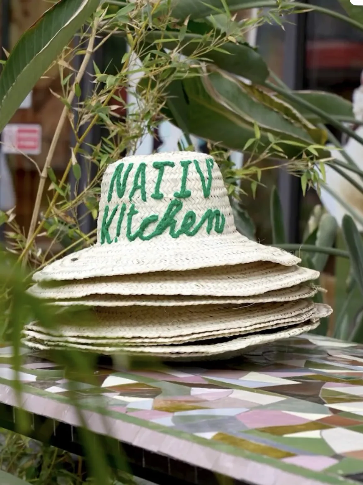
Nº 09
Sur WhatsApp, avec votre poke déjà écrit.